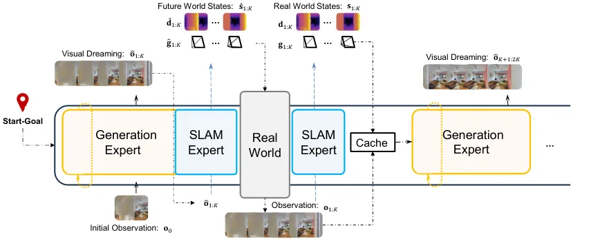
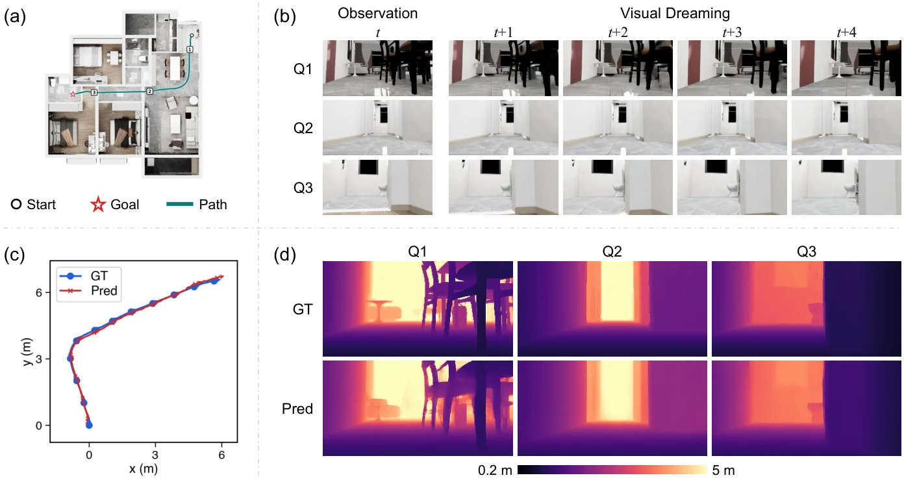
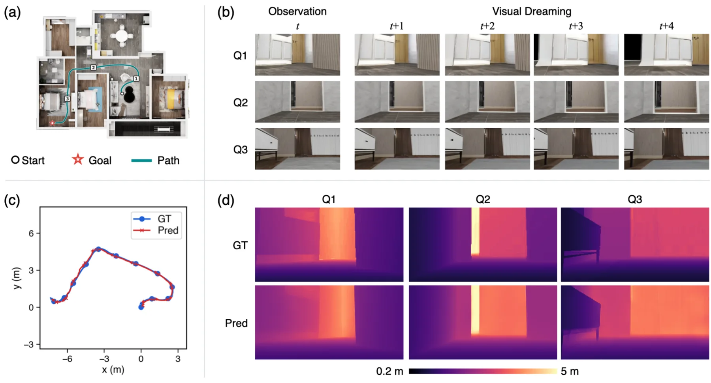
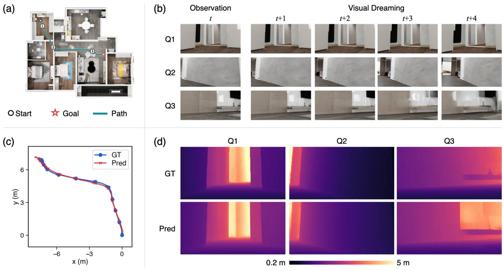
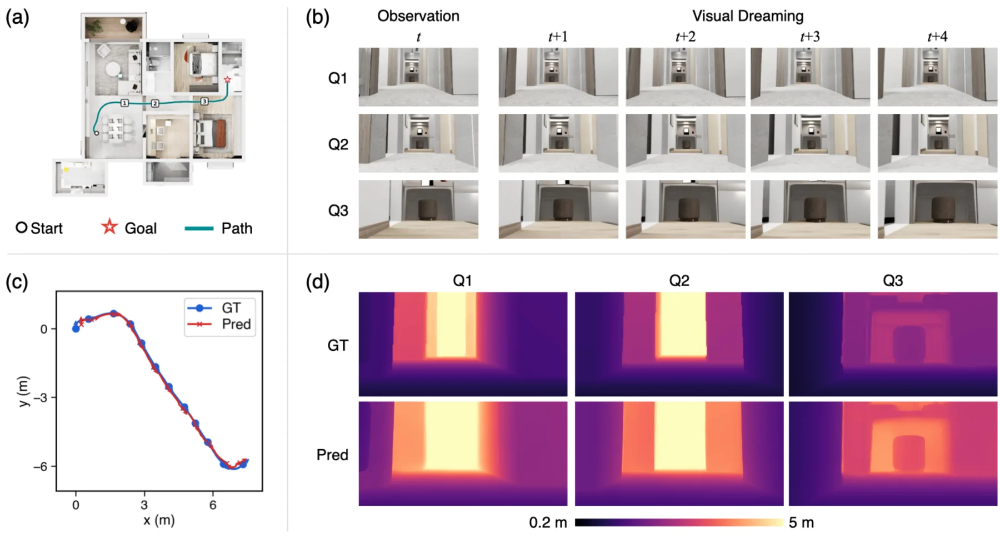

World SLAM Model：把 SLAM 机制内嵌进导航世界模型的联合建模
World SLAM Model: Joint World Modeling for SLAM and Navigation
只给 RGB 与首帧系目标位置，用三专家 MoT 把“梦未来—从梦里复原米制位姿与深度—观测回灌后端纠偏”串成闭环；InternVLA-N1 Home SR 70.3、Commercial 73.9（均优于带深度的 LoGoPlanner），5% 留出集 ATE RMSE 0.021 m。
ATE RMSE
success rate
作者、单位与技术谱系 · Research context
作者与单位
研究脉络
- SLAM-Former: Putting SLAM into One Transformer (Yuan et al., ECCV 2026)方法上游 / 直接对照基线关系：WSM 在同一 5% 留出集上与 SLAM-Former 比较位姿与稠密重建，并沿用其位姿监督形式（对平移与单位四元数旋转的 smooth-L1、绝对与成对相对位姿同时监督）；SLAM-Former 的 8 位作者中有 6 位同时署名本文，两篇是同一团队的方法接续。[arXiv 官方 HTML v1（第 4.3 节与附录 A.1）]
- LingBot-VA (Li et al., 2026)方法基座关系：WSM 的教师强制训练序列组织方式（clean tokens / prediction tokens、单次前向并行监督所有 chunk）明确沿用 LingBot-VA，深度与位姿专家的权重线性插值初始化也沿用其做法。[arXiv 官方 HTML v1（第 3.3、4.1 节）]
- Wan2.2-5B (Wan et al., 2025)方法基座关系：三个专家全部从 Wan2.2-5B 初始化，RGB 与深度都用其因果 VAE（时间压缩比 M=4）编码，生成侧用 flow matching 训练。[arXiv 官方 HTML v1（第 3.1、3.3、附录 B.1）]
- Fast-WAM (Yuan et al., 2026a) 等同组世界动作模型工作团队前作（同一末位作者组）关系：引用中的 Fast-WAM（Tianyuan Yuan、Zibin Dong、Yicheng Liu、Hang Zhao）与世界动作模型一脉，与本文同属“视频预测 + 动作/状态联合建模”的问题设定，本文把其中的 SLAM 机制显式拆成独立专家。[arXiv 官方 HTML v1（第 2.3 节与参考文献）]
合作网络
- World SLAM Model 项目页Hang Zhao（Shanghai Qi Zhi Institute / 清华 IIIS 方向） → tsinghua-mars-lab.github.io/WorldSLAMModel关系：官方项目页托管[arXiv 官方 HTML v1（作者块项目地址）]
- SLAM-Former ↔ World SLAM ModelYijun Yuan / Kenan Li / Weibang Wang / Minghui Qin / Weicheng Zheng / Hang Zhao → World SLAM Model（本文）关系：共同署名与直接技术依赖[arXiv 官方 HTML v1（参考文献 Yuan et al. 2026b 与作者块）]
- Shanghai Qi Zhi Institute ↔ IIIS Tsinghua ↔ Shanghai Jiao Tong UniversityShanghai Qi Zhi Institute（第一作者） → IIIS, Tsinghua University / Shanghai Jiao Tong University（署名作者单位）关系：共同署名（跨机构合作）[arXiv 官方 HTML v1（作者块单位标注）]
以上单位与署名均为 arXiv 官方 HTML 作者块的事实；“同一团队的方法接续”与“同组前作”是基于共同署名与引用的有来源解释，不推断导师—学生或实验室隶属之外的关系。
方法本质拆解 · What actually changed
是不是微调？
不是微调，是从 Wan2.2-5B 出发的完整两阶段训练。三个专家都改了权重：生成专家直接继承 Wan2.2 的 DiT 权重（宽度 3072），深度与位姿专家用预训练权重线性插值到 1536 与 768 宽度。教师强制预训练 10 个 epoch（48×A100，global batch 48，chunk 大小 1–4 随机采样）；后训练用 DiffusionNFT 跑 1 个 epoch，但只更新生成专家自注意力层上的 LoRA（rank 32、α=64），SLAM 专家全程冻结。
有没有额外约束？
有，而且约束都落在具体变量上。深度被裁剪到 [0.2, 5] m 并在 log 空间归一化后再编码，L_d 用深度 latent 的 MSE；位姿全部在首帧相机坐标系表达、不做尺度对齐，并同时施加绝对位姿与成对相对位姿的 smooth-L1 监督；目标位置只在首帧系下以三维点给出、且只经 cross-attention 条件化生成专家；后训练在奖励里加“安全优先”门控（碰撞指示 s_i 决定该 rollout 是否被计入指数加权）。
推理/后端到底做了什么？
推理是纯前馈的单次回归：每个 chunk 一次前向直接输出未来深度与米制位姿，不做迭代去噪；低层控制器只执行预测位姿轨迹的前缀（K=4 个 latent 帧 × M=4 = 16 个位姿，执行到第 4 个后重规划）。规划结束后生成的画面全部丢弃，持久历史只保留观测帧及其状态，KV cache 跨规划步复用、最多 128 个观测 latent 帧；局部后端对当前 chunk 内已观测帧重新估计深度与位姿并替换旧值，但它们在 KV cache 中的 RGB token 保持不变。没有全局 BA、没有位姿图、没有回环检测。
方法本质是什么？
本质是让“想象—执行—纠偏”共用一个米制世界状态：生成专家回答“接下来会看到什么”，SLAM 专家回答“这对应怎样的相机运动与几何”，并把想象帧与真实帧都落到首帧相机系这一个坐标系里；导航目标只通过目标 token 影响想象内容，不直接改动状态维护规则。它没做的是：不接外部里程计或深度输入、不做全局平差、不做回环，纠偏只发生在 chunk 内的局部后端；稠密几何精度因此受限于外观潜空间的表达能力。
输入=单目 RGB 序列 + 首帧相机系下的目标位置（推理时叠加历史 KV cache）；改变的位置=共享世界状态（深度潜变量与米制相机位姿）与生成专家的 LoRA 权重；动作=三专家 MoT 的自回归“梦想”+ SLAM 专家逆动力学与 chunk 内局部后端重估 + 安全优先的 DiffusionNFT 后训练；直接效果=InternVLA-N1 上仅用 RGB 取得 Home SR 70.3 / Commercial SR 73.9，5% 留出集 ATE RMSE 0.021 m（优于微调 SLAM-Former 的 0.041 m）。

动机与问题Motivation
动机与问题
论文把问题讲得很直接：模块化管线（SLAM → 规划）与端到端策略都把几何估计和导航分开优化，导航目标无法反过来塑造世界状态该怎么学、该怎么维护。现有方法也并未真正摆脱对空间的依赖——StreamVLN 与 Dynam3D 仍吃深度输入，NavDP 需要外部真值定位，LoGoPlanner 等把前馈重建模型当上游几何来源。作者提出的替代方案是：让导航目标与几何目标在训练期共同塑造一份共享的世界状态，并在推理期用共享的流式记忆与误差纠偏持续更新这份状态。论文把 SLAM 机制逐条对应到世界模型的需求上：持续处理观测、保留过去交互、预测未来演化、随新观测更新状态。
方法Method
方法总览
模型是一个含三个专家的 Mixture-of-Transformers：生成专家（RGB token）、深度专家与位姿专家（两者合称 SLAM 专家），共 30 层 Transformer 共享联合自注意力。观测按 Wan2.2 因果 VAE 编码，时间压缩比 M=4（一个 latent 帧覆盖 4 个原始帧），输入分辨率 320×192，按 chunk 处理，chunk 大小 K 在预处理时为 1–4 个 latent 帧。每步：以历史观测与目标 token 为条件，生成专家“梦”出未来 K 个 latent 帧；SLAM 专家对这些想象帧做逆动力学，直接回归未来的深度与米制位姿；执行后把新观测回灌，局部后端在 chunk 内联合重估最近 k 帧的状态并更新其 KV cache。目标位置以首帧相机系下的三维点形式编码为目标 token，只经 cross-attention 条件化生成专家。
关键技术细节
训练序列采用教师强制（沿用 LingBot-VA 的组织方式）：每个 chunk 的 token 分成 clean tokens（O_n 与 S_n 作为上下文）与 prediction tokens（给生成专家的带噪 RGB，以及带零深度与单位位姿的 state query S̄_n），整段 episode 的所有 chunk 在一次前向里并行监督。注意力掩码保持跨 chunk 的时序，clean token 只按时间因果地看同类型历史（RGB 与状态历史互相不可见），chunk 内的带噪 RGB 互相可见但不与 state query 互看，避免信息泄漏。损失为 L_pre = L_FM + λ_d L_d + λ_p(L_abs + L_rel)，λ_d=1、λ_p=0.5；深度被裁剪到 [0.2, 5] m、在 log 空间归一化后经 Wan2.2 VAE 编码，L_d 是深度 latent 的 MSE；位姿用 smooth-L1 同时监督绝对位姿与成对相对位姿，且全部在首帧相机系表达、不做尺度对齐。后训练用 DiffusionNFT，只给生成专家的自注意力加 LoRA（rank 32、α=64），SLAM 专家冻结，奖励含“安全优先”门控（碰撞指示 s_i）与对专家轨迹测地进度的匹配代价（T=0.01 m²、r_g=0.2 m）。推理时每个 chunk 单次前向直接回归位姿与深度，不做迭代去噪；生成帧每步用完即弃，持久历史只保留观测帧，KV cache 最多保留 128 个观测 latent 帧。

实验Experiments
实验设置
数据：InternVLN-N1 导航数据集，另留 5% 迹作为 SLAM 测试集，且不参与预训练与后训练。导航基准为 InternVLA-N1 的 start-goal 闭环评测：40 个 InternScenes（Home 与 Commercial 各 20）各 100 个 episode，全部与训练数据不相交；目标以机器人初始系下的位置给出并保持固定，成功判据是机器人在目标 1 m 内减速或停止，指标为 SR 与 SPL。对照为 DD-PPO、iPlanner、ViPlanner、LoGoPlanner（含用其最新官方代码的复评†），这些基线多数使用深度输入。SLAM 侧在同一 5% 留出集上与 SLAM-Former 比较：发布 checkpoint†，以及在 95% 训练集上微调过的版本‡；位姿用 Sim(3) 对齐后的相机中心 ATE RMSE，稠密重建用对齐并做刚性 ICP 后的点到最近 GT 点 Acc. RMSE。训练：所有专家从 Wan2.2-5B 初始化（深度/位姿专家由预训练权重线性插值到 1536/768 宽度），48×A100，教师强制预训练 10 个 epoch、global batch 48，AdamW（wd 0.01，峰值 lr 3×10⁻⁵、cosine 衰减到 3×10⁻⁶），后训练 1 个 epoch；推理在单张 RTX 4090 上，K=4 个未来 latent 帧、8 步采样。
实验数字与比较
① 导航（表 1）：WSM（仅 RGB）Home SR 70.3/SPL 66.3、Commercial SR 73.9/SPL 71.8，相对 LoGoPlanner（RGB+Depth，57.3/52.4 与 67.1/63.9）分别提升 10.7 与 8.1 个百分点；对官方代码复评的 LoGoPlanner†（59.6/53.6 与 65.8/62.0）同样领先。其他基线：ViPlanner 45.0 与 63.7、iPlanner 43.0 与 54.6、DD-PPO 0.4 与 5.3。② SLAM（表 2）：WSM 的 ATE RMSE 0.021 m，SLAM-Former† 为 0.051 m、微调版‡ 为 0.041 m；同一行的稠密重建 Acc. RMSE，WSM 0.062 m 落后于微调版 0.041 m，作者归因于深度被编码进以外观为导向的 VAE 潜空间。③ 后训练增益（附录 B.2，同推理设置）：后训练把 Home/Commercial 的 SR 再提高 5.7 与 5.4 个百分点、SPL 提高 4.8 与 4.9 个百分点，且只有生成专家被更新，说明收益来自“梦什么”变了。
消融/失败边界
① 去掉 SLAM 专家（IDM w/o SLAM：只保留逆动力学、不做深度估计也不定位观测帧）：Home SR 从无后训练 WSM 的 64.6 掉到 28.1、Commercial 从 68.5 掉到 32.1，相差约 36 个百分点，说明主导增益来自“同一米制坐标系内的定位/建图 + 逆动力学”，而不是生成质量。② 去掉局部后端（每个状态只估计一次然后冻结）：Home SR/SPL 68.3/65.2、Commercial 72.6/70.5，加上后端后为 70.3/66.3 与 73.9/71.8，即 +2.0/+1.1 与 +1.3/+1.3。③ 失败边界：深度被压进外观导向的 VAE 潜空间，稠密几何精度落后专用几何模型（0.062 m vs 0.041 m）；历史 KV cache 不压缩，内存与算力随观测帧数线性增长，长时部署受限；评测仅在仿真内完成，成功判据为 1 m 内停止，未见实机验证。
局限与迁移Limitations & Transfer
局限与待核验
作者明确承认两条限制：一是深度编码在 Wan2.2 的以外观为导向的 VAE 潜空间，用几何保真换取与预训练视频生成器的兼容；二是历史 KV cache 不做压缩，内存与计算随观测帧数增长，限制长时部署，作者把“几何原生潜表示”与“高效历史压缩”列为后续工作。待核验项：SLAM 评测只有 5% 的 InternVLN-N1 留出迹，且与 SLAM-Former 的输入分辨率不同（320×192 对 518×518），跨分辨率的可比性需要重算；论文未与经典优化式 SLAM（如 ORB-SLAM3、DROID-SLAM）对照；未报告失败案例统计（碰撞率、定位发散比例）；导航全部在仿真中评测，论文未给出 sim-to-real 或实机结果；后训练奖励用到数据集占据图与专家轨迹，换数据集时需要重新构造代价。
与你研究路线的关系
① 可迁移的机制设计：把“后端纠偏”从外部模块变成模型内部的状态维护动作（chunk 内重估 + 状态替换、RGB token 不动），这正是我们平滑/回环模块可以按“漂移门控 + 局部重估”形态接进序列模型的位置。② 后训练只更新生成器、冻结状态估计器，是为了防止“通过篡改状态估计来刷奖励”，这条防作弊约束可以直接搬到我们做学习式调参与后端耦合时的训练协议里。③ “逆动力学 + 观测回灌”的闭环给出一个便宜的相对一致性检查器：把想象轨迹与真实观测轨迹在同一坐标系里比对，可作为我们 GNSS/INS + 视觉组合的异常检测信号。④ 下一步最小实验：在同一段序列上，把前馈几何模型分别当作 (a) 外部上游模块与 (b) 内部共享状态，比较 ATE 与长期漂移曲线，验证“机制内嵌”的增益是否可复现；同时记录 KV cache 增长曲线，先量化长时部署的显存/延迟代价再决定是否引入。明确的停留点：WSM 不做 GNSS、不做模糊度处理，也不做全局 BA，它的可迁移部分集中在状态维护方式与训练约束上。







